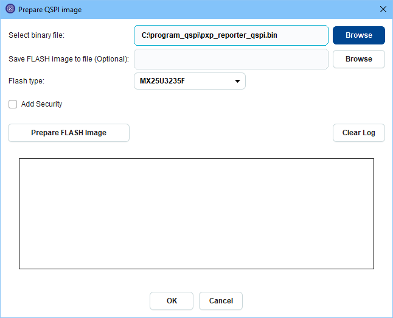

3.1. Flash Code¶
Flash Code tool allows users to program the Flash and execute code from it.
Figure 5 Flash Code tool for DA1469x, DA1470x and DA1459x family devices
On the top left of the tool user can see the available sections.
For DA1469x, DA1470x and DA1459x device families the available sections are dynamic and depend on the Product Header contents, on FW images and CS presence. Start and End address indicate the start and end address of each section. For the rest of the families only Complete Flash is available. On the center of the tool two tables are presented: Content Read table is read only and presents the data read from Flash memory for this section. Content to Burn is editable and user can either edit the fields of a section or import the contents of a file at this table and then burn the respective section to Flash Memory. The following sections exist for DA1469x, DA1470x and DA1459x family devices:
Configuration Script (CS): Enable section from menu Settings -> Advanced Settings. This section contains a script with a certain format which is used for programming registers with values that are defined during production testing, storing a trim value for the application software, and defining UART time-out time during booting. The booter will execute the script to prepare and initialize the system, before the CPU starts running application code from the Flash.
CS, if present in Flash, should be programmed at the beginning of the flash (address 0x00000000). CS section start address cannot be changed by the user and its end address depends on the size of the CS. When the Configuration Script section is selected, a set of filters is activated on the left of the tool, which help the user locate specific entries if the CS. The user can filter the CS by CS group, register name or bit field name or filter only the commands programming values to registers. User can mouse over the Value column of the Configuration Script field in Content to Burn table in order to edit the CS by adding or removing commands from it using the Manage Configuration Script dialog.
Product Header: Enable section from menu Settings -> Advanced Settings. This section contains important information about the system and the flash type. Product Header is used by the device booter to detect if flash is programmed and boot FW images from flash. Product Header is the first section in Flash (at address 0x00000000) unless Configuration Script is programmed in Flash. In such a case and if Booter value is not programmed in Configuration Script, Product Header will start one sector after CS, namely at address 0x00001000. If Booter Value has been programmed in CS, then Product Header will be located at the address indicated by Booter Value. Note that start-end addresses of this section cannot be changed by the user, since Product Header should be located at predefined addresses, according to the cases described already, in order for the device booter to locate it.
Product Header (Backup): Enable section from menu Settings -> Advanced Settings. The backup Product Header is a read only copy of the primary Product Header. Each time primary Product Header is updated (new values burned or values erased), backup Product Header is also updated in order to contain a copy of the contents of the primary Product Header. Backup Product Header will always start one sector after the primary Product Header. So if the primary Product Header starts at 0x00000000, backup Product Header will start at 0x00001000. Similarly to primary Product Header, backup Product Header start-end addresses are not editable by the user.
FW Image 1: Enable section from menu Settings -> Advanced Settings. It contains the FW Image programmed at the Active FW Image address field of Product Header. Start address can not be edited by the user since it depends on Active FW Image address value and end address depends on the size of the FW Image.
FW Image 2: Enable section from menu Settings -> Advanced Settings. It contains the FW Image programmed at the Upgrade FW Image address field of Product Header. If active and upgrade FW Image addresses have the same value, only FW Image 1 section will be available. Similarly to FW Image 1 section, start and end address text fileds cannot be edited by the user.
NVPARAMS: Enable section from menu Settings -> Advanced Settings. This section allows the user program the NVPARAMS block on Flash memory. See QSPI NVPARAMS for more info on this section.
The Complete Flash button presents the contents of the complete Flash as raw data. Complete Flash view is available for all families. User can import a file on Content to Burn table using the Import from File button. The user can specify the address to burn the Content to Burn by editing the Start Address text field. Content Read table presents by default 32K of data. The user can change the start and end addresses to read the preferred memory segment.
The sections are initially updated when the Connect button is pressed and after burn and erase actions, which change the contents of the memory.
The tool provides the following buttons and options:
- Connect: Establishes connection to the target device by initializing communication interface and downloading appropriate FW required for the communication to the target.
- Read: Reads Flash region between start and end address and loads its contents into Content Read
- Burn: Burns Content to Burn table to flash at the address indicated by start address. When fields are presented in Content to Burn table, light red rows indicate the fields which will change in Flash memory when the Burn button will be pressed.
- Erase: Erases memory region between start and end address.
- Add: Can be used to add sections that are not already present in memory. Such sections are Configuration Script and Firmware Image. When Configuration Script is selected, the Manage Configuration Script dialog is presented which allows the user to create the CS command by command. The CS contents are then loaded in Content to Burn table and are ready to the burned to the Flash. When the Firmware Image section is selected, the dialog to prepare the FW is presented and the FW Image contents are then loaded in Content to Burn table. Note that in both cases the Configuration Script or the FW Image are not automatically burned to the Flash. The user has to set the start address in order to indicate where the section should be burned and then press the Burn button.
- Import from File: Can be used to import the selected section contents from a file. When Complete Flash is selected, the Import from File button can be used to import the contents of any section (e.g. Configuration Script, Product Header) or import a ready FW image or import a FW file that will later be prepared as a FW image.
- Export to File Exports the contents of the region between start and end address to a file.
- Check Flash size here: Shows the total Flash size attached to the target device. There is a default value per family but the user can change this value if a non default Flash is being used.
3.1.1. Programming Flash memory¶
Programming a whole Flash Image:
User first selects the Complete Flash section and then imports a file containing Product Header starting at address 0x00000000, followed by Backup Product Header and 1 FW Image starting at the address indicated by Active and Upgrade FW Image Address fields of Product Header or 2 FW Images starting the first at Active FW Image Address and the second at Upgrade FW Image Address. The file should be burned at the beginning of the Flash, if no Configuration Script is present in Flash, otherwise it should be burned at address 0x00001000.
User first selects the Complete Flash section and then selects Firmware Image from the Add button popup menu (Figure 6). If the user has already imported a file via the Import button, the binary file text field will be filled with the path of the file. Otherwise the user can select the following types of files:
- Simple firmware (FW) file: This file does not contain Product Headers or Image Header. The contents of the file will be first converted to a Firmware image and then will be used to create a whole Flash Image.
- Firmware Image file: This file is a ready FW image, containing Image Header. The contents of the file will be used to create a whole Flash Image.
- Whole Flash Image: This file contains Product Headers and Firmware Image(s). The contents of the file will not change, since Product Header is already included in the file contents.
In the first two cases the Product Header will be created according to the flash configuration matching the selected flash type. This means that specific magic values will be inserted to the Product Header according to the selected flash type. Also the application will find an approproate address to burn the generated flash image, by checking CS (if present in Flash) and CS Booter value (if present in CS). The address at which the Product Header of the Flash Image will be burned also affects the Active and Upgrade FW address fields of Product Header.
In the last case the application cannot change Product Header (magic values and Active/Upgrade address fields) that is already included in the Flash Image, therefore the user will have to specify the address at which Product Header should be burned. Default address is at the beginning of the Flash.
Figure 6 Preparing flash image for DA1469x family devices
Programming separately the Product Header and the FW Image(s):
- Programming the Product Header first: The user can select either Complete Flash or Product Header and import the product header from a file. Alternatively the user can select Product Header and edit the field values at Content to Burn table. Then the user can program the Product Header at the beginning of the Flash, if CS is not in Flash or at address 0x00001000 if CS is burned in Flash. If Booter Value has been specified in the CS, the user should burn the product header at the address indicated by the Booter Value command of the CS.
- Programming a FW Image next. The user can select Complete Flash and import a ready FW Image (already contains the image header and data) and then set the address the FW Image should be burned to at the start address text field.
- Programming a second FW Image: The user can select Complete Flash and import a ready FW Image, specify the address for the FW Image (a different address than the one used for Firmware Image 1) in the Start Address text field and burn the FW Image. Then the user can set the address that the second FW Image has been burned to Upgrade FW Image Address field of Product Header and then burn the Product Header.
3.1.1.1. DA1453x in BYPASS mode¶
Please note that currently SPI Flash for DA1453x family devices has been tested in BUCK mode at 3V and BOOST mode at 2.7V.
For the Bypass mode the flash programmer binary needs to be updated.
Please follow below steps to generate the new binary with bypass support:
- Open the flash programmer KEIL project under
6.0.14.1114\utilities\flash_programmer. See Figure 7 - Enable the CFG_POWER_MODE_BYPASS flag in arch.h file
- Compile. jtag_programmer_531.bin is generated
- Rename jtag_programmer_531.bin to jtag_programmer.bin
- Under your SmartSnippets™ Toolbox directory installation: For example
C:\Program Files (x86)\SmartSnippetsToolbox\SmartSnippetsToolbox5.0.18\common_resources\SupportPackages\DA1453x\toolbox_resources\common\jtag_programmer.bin
or
C:\DiaSemi\SmartSnippetsStudio2.0.18\Toolbox\common_resources\SupportPackages\DA1453x\toolbox_resources\common\jtag_programmer.bin.
Remove the jtag_programmer.bin and replace it by the new one.
Figure 7 Generate flash programmer binary on KEIL to support bypass mode for DA14531
3.1.2. QSPI NVPARAMS¶
Note
The tool is available for DA1468x, DA1469x, DA1470x and DA1459x family devices.
This is considered as an advanced tool. Enable it from menu Settings -> Advanced Settings.
This section allows the user to read and write NVPARAMS block on flash memory and is similar to OTP NVDS tool used for DA14580/581/583 chip family.
The recommended address for NVPARAMS differs per family and is prefilled in the start address text field. In case a partition table is already programmed in QSPI, the application will try automatically to detect the start address of NVPARAMS section from the partition table and will recommend this address to the user. By editing the start address text field, user can change the address at which a burn and a read operation will be performed. The address (in bytes) should be a hex number smaller than the maximum address allowed by the QSPI size specified on Device Settings. For burn operations, the address should be such so that the address where the last NVPARAMS data byte will be written is smaller than the maximum QSPI address.
An example of the NVPARAMS section is shown below:
Figure 8 QSPI NVPARAMS Section
User selects or inserts the values of the corresponding parameter at column Value. Default values are shown on column Default Value.
There is a second editable column called Enabled where the user defines that the parameter will be actually used. It is also called Validation Flag. When checked a byte with value 0x00 is added at the end of the parameter value in memory. When left unchecked a byte with value 0xFF is added to define that the parameter is not valid for that configuration.
All values except TAG_BLE_PLATFORM_BLE_CA_MIN_RSSI are accepting unsigned values. Validation error messages are shown when user tries to export or burn invalid values. Value of TAG_BLE_PLATFORM_BLE_CA_NB_BAD_PKT is recommended to be half the value of TAG_BLE_PLATFORM_BLE_CA_NB_PKT.
3.1.3. Configuration Script (CS) in QSPI¶
A Configuration Script can be added to the QSPI memory by pressing the Add button and selecting Configuration Script. The Manage Configuration Script dialog pops up which will help the user build the CS by adding commands to it. In case a valid CS is already present in the QSPI, the same dialog can be shown by selecting the button that becomes visible when mousing over the value column of the Configuration Script field. Please refer to Configuration Script (CS) in OTP for more details about the Configuration Script and how to use the Manage Configuration Script dialog. Since the CS can be burned more than once to the QSPI memory, the user can alter the contents of the CS that is already burned in memory by deleting commands and adding new commands at any place in the CS.
3.1.4. Program SPI/EEPROM¶
The Program SPI/EEPROM feature has a wizard like structure that guides users through all the necessary steps to program a .hex/.bin file to the SPI/EEPROM memory.
In this page users select a .hex/.bin file to be programmed from the wizard. After selection users have 3 options on how to program the selected file.
Figure 9 Program SPI/EEPROM wizard: Intro page
- Do not modify: Using this option no modifications are applied to the contents of the source file. Optionally, if the Bootable option is checked, a bootable header can be added to the contents of the input file.
- Make single image: If this option is selected then a single image of the file will be created. Users have the option to encrypt the final image.
- Make multi image: Users have the option to create an image containing two source files. Also, a secondary bootloader may be included.
Note
Options make single/multi image may change also the source file.
A work-flow of the wizard is presented below.
Figure 10 Program SPI/EEPROM wizard: Work-flow
In this page users may select to encrypt the final image. Users may provide their own key and IV (Initial Value) or use the default ones.

Figure 11 Program SPI/EEPROM wizard: Encryption page
In this page users provide the second image to be program on memory.
Figure 12 Program SPI/EEPROM wizard: Multi image page
In this page users may select to add secondary bootloader to the image. Users can ether use the default secondary bootloader just by clicking on the check box or they can provide their custom one by providing the path through the Browse button.
Figure 13 Program SPI/EEPROM wizard: Bootloader page
In this page users may configure the memory layout of the image.
Figure 14 Program SPI/EEPROM wizard: Offsets page
On the final page of the wizard there is a summary of all the user choices regarding the creation of the image.